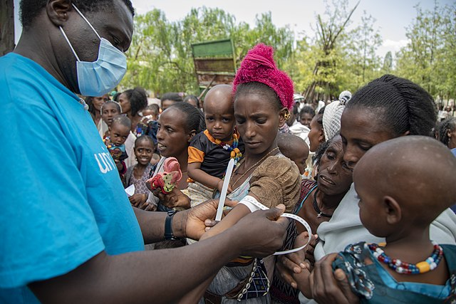

flowchart TD
classDef primary fill:#e1f5fe,stroke:#0288d1,stroke-width:2px
classDef secondary fill:#f0f4f8,stroke:#4682b4,stroke-width:1px
classDef highlight fill:#fce4ec,stroke:#d81b60,stroke-width:2px
title[("Security Incident Analysis<br>Research Questions")]
title --> A & B & C & D
A["What types of attacks are<br>most common?"]:::primary
A --> A1["Frequency by attack method"]:::secondary
A --> A2["Geographic distribution<br>of attack types"]:::secondary
B["How does violence vary by<br>year and political event?"]:::primary
B --> B1["Temporal patterns<br>and hotspots"]:::secondary
B --> B2["Correlation with<br>political upheaval"]:::secondary
B --> B3["Emerging threats"]:::secondary
C["How does risk differ for national<br>vs. international staff?"]:::primary
C --> C1["Casualty comparison<br>by nationality"]:::secondary
C --> C2["Risk factors across regions"]:::secondary
D["What contextual factors shape<br>security patterns?"]:::primary
D --> D1["Conflict dynamics"]:::secondary
D --> D3["Armed actor motivations"]:::secondary
Humanitarian Aid Under Fire
A Global Analysis of Violence Against Humanitarian Workers

Introduction: The Rising Threats to Humanitarian Workers
Around the world, humanitarian aid workers risk their lives to assist communities affected by conflict, disaster, and crisis. But what happens when aid itself becomes a target?
This research explores global patterns of violence against humanitarian personnel using data from the Aid Worker Security Database (AWSD). By examining incident patterns across time, geography, and conflict contexts, we uncover both universal trends and context-specific threats that shape the security landscape for aid operations worldwide.
In particular, this analysis focuses on eight contemporary conflict hotspots, Afghanistan, Democratic Republic of Congo (DRC), Mali, Palestine, Somalia, South Sudan, Sudan, and Syria, that represent both the highest incident rates over all time and in the past 15 years.
Research Questions and Methodology
This research seeks to answer four fundamental questions about humanitarian security:
This research combines data analysis from the AWSD with context about conflict in each region. By connecting incident trends with political events, territorial control, and the actions of armed groups, it offers both a global overview and detailed regional insights.
About the Dataset
This analysis utilizes the Aid Worker Security Database (AWSD), a global resource maintained by Humanitarian Outcomes that tracks major incidents of violence against humanitarian aid workers. Each record in the dataset includes:
- Temporal and geographic data: Incident date, location, coordinates
- Organizational details: Type of agency affected, staff nationality
- Incident specifics: Attack type, context, perpetrators, motives
- Impact metrics: Numbers killed, wounded, kidnapped
The AWSD is considered the gold standard for humanitarian security data and is used by researchers, policy makers, and security practitioners worldwide.
Global Patterns of Humanitarian Security Incidents

Worldwide Incident Trends (1997-2025)
Security incidents affecting humanitarian workers have shown a concerning upward trajectory over the past three decades. Several inflection points stand out:
- 2003-2006: Sharp increase following international interventions in Iraq and Afghanistan
- 2011-2014: Surge during the Arab Spring and subsequent conflicts
- 2018-2020: Peak during intensified conflicts in Syria, Yemen, and the Sahel
- 2023-2025: Recent escalation in multiple conflict zones, including Gaza, Sudan, and DRC
These global patterns reflect both the changing nature of conflict and the evolving role of humanitarian actors in complex emergencies.
Regional Focus: Eight Contemporary Hotspots
Why These Eight Countries?

While security incidents affect humanitarian operations worldwide, they are not evenly distributed. This project focuses on,
- Middle East: Syria and Palestine
- East Africa: Somalia, South Sudan, and Sudan
- Central/South Asia: Afghanistan
- Central Africa: DRC
The eight countries selected for detailed analysis Afghanistan, DRC, Mali, Palestine, Somalia, South Sudan, Sudan, and Syria, represent both historical and contemporary hotspots for humanitarian security incidents. Together, they account for approximately 68% FILL IN of all incidents recorded in the AWSD over the past 15 years. Each context also offers unique insights into how different conflict dynamics shape security threats.
Staff Nationality and Casualty Patterns
There is a consistent disparity in security incidents affecting national versus international staff:
- National staff account for a significant amount of all casualities (killed, wounded, and kidnapped)
- This disparity persists across all geographic regions analyzed
This pattern represents both an operational challenge and an ethical concern for humanitarian organizations attempting to manage risk equitably.
Attack Methods and Attack Contexts
Attack methods and contexts vary significantly across these eight conflict zones, reflecting differences in conflict dynamics, armed actor capabilities, and tactical objectives:
Attack methods:
- Syria and Palestine: Aerial bombardment and shelling dominate, reflecting state military capabilities and urban warfare. Combat/crossfire dominates, indicating collateral damage rather than deliberate targeting.
- Sudan, South Sudan, Somalia: Shooting predominates, indicating organized ground operations by militarized forces
- Afghanistan, DRC, Mali: Kidnapping emerges as the primary attack method, suggesting resource extraction and leverage-seeking motivations
This distribution demonstrates how humanitarian security threats are shaped by the unique characteristics of each conflict, requiring tailored mitigation strategies rather than standardized approaches.
Attack contexts:
- Syria, Palestine: Combat/crossfire dominates, indicating collateral damage rather than deliberate targeting
- Sudan, South Sudan, Somalia, DRC, Mali: Ambushes predominate (40-50% of incidents), showing deliberate targeting during movement
- Afghanistan: More diverse contexts including direct targeting, raids on compounds, and kidnappings
Implications for Operations
The prevalence of different attack contexts has direct implications for humanitarian operations:
- In ambush-dominated environments (Sudan, DRC, Mali): Journey management, route analysis, and convoy protection are critical
- In combat/crossfire contexts (Syria, Palestine): Early warning systems, bunkers, and conflict mapping become essential
- In compound targeting scenarios (Afghanistan): Physical site security and access control are priorities
These distinctions highlight the importance of adapting operational security plans to address the most likely contexts of attack in each environment.
Political Transitions Create Vulnerability Windows
Security incidents consistently spike during power transitions, though the specific relationship varies:
- Peace agreements sometimes correlate with increased incidents (South Sudan)
- Coups and regime changes usually lead to immediate security deterioration (Sudan, Mali)
- Territorial control shifts create new vulnerability patterns (Syria, Afghanistan)
Conclusions and Recommendations
Key Findings and Implications
- Context-specific security approaches are essential
- The substantial variation in attack methods, contexts, and locations across regions demonstrates that standardized security protocols will be insufficient
- Protection inequality requires urgent attention
- The universal pattern of national staff bearing 5-10 times higher casualty rates represents both an operational and ethical priority
- Political transitions create vulnerability
- Security incidents consistently spike during power transitions, though the specific relationship varies by context
- Security metrics require careful interpretation
- Reduced incidents may indicate humanitarian withdrawal rather than improved conditions
Recommendations for Humanitarian Organizations
Security Planning
- Develop region-specific protocols based on predominant attack methods and contexts
- Implement equity-based duty of care policies that provide equivalent protection for national and international staff
- Establish early warning systems tied to political transitions and conflict dynamics
Operational Approaches
- In ambush-prone regions (Sudan, South Sudan, Somalia, DRC, Mali): Prioritize journey management and convoy protection
- In aerial threat zones (Syria, Palestine): Focus on shelter designs and early warning systems
- In kidnap-risk areas (Afghanistan, DRC, Mali): Emphasize low-profile approaches and staff tracking
Policy Advocacy
- Support efforts to hold people accountable for attacks on aid workers
- Advocate for safe zones and agreements to protect humanitarians in conflict areas
- Encourage continued funding for safety measures that fit each local context
Recommendations for Future Research
- Explore how security incidents affect access to humanitarian aid
- Look at differences in safety and outcomes for local vs. international staff
- Compare which security strategies work best in similar conflict areas
- Study how climate issues and conflict together affect humanitarian work
By using insights from each specific context, humanitarian organizations can create stronger, more tailored safety plans that respond to the unique challenges of each location, while also working to ensure fair and equal protection for both local and international staff.
📥 Source and Access
This dataset was downloaded directly from: 👉 Aid Worker Security Database (AWSD) (Outcomes, 2024).
Please cite as:
Humanitarian Outcomes. Aid Worker Security Database (AWSD). https://aidworkersecurity.org
References
Foreign Relations, C. on. (2024a). Al-shabab in somalia. https://www.cfr.org/global-conflict-tracker/conflict/al-shabab-somalia
Foreign Relations, C. on. (2024b). Civil war in south sudan. https://www.cfr.org/global-conflict-tracker/conflict/civil-war-south-sudan
Foreign Relations, C. on. (2024c). Conflict in syria. https://www.cfr.org/global-conflict-tracker/conflict/conflict-syria
Foreign Relations, C. on. (2024d). Israeli-palestinian conflict. https://www.cfr.org/global-conflict-tracker/conflict/israeli-palestinian-conflict
Foreign Relations, C. on. (2024e). Power struggle in sudan. https://www.cfr.org/global-conflict-tracker/conflict/power-struggle-sudan
Foreign Relations, C. on. (2024f). Violence in the democratic republic of congo. https://www.cfr.org/global-conflict-tracker/conflict/violence-democratic-republic-congo
Foreign Relations, C. on. (2024g). Violent extremism in the sahel. https://www.cfr.org/global-conflict-tracker/conflict/violent-extremism-sahel
Foreign Relations, C. on. (2024h). War in afghanistan. https://www.cfr.org/global-conflict-tracker/conflict/war-afghanistan
Outcomes, H. (2024). Aid worker security database. https://www.aidworkersecurity.org/